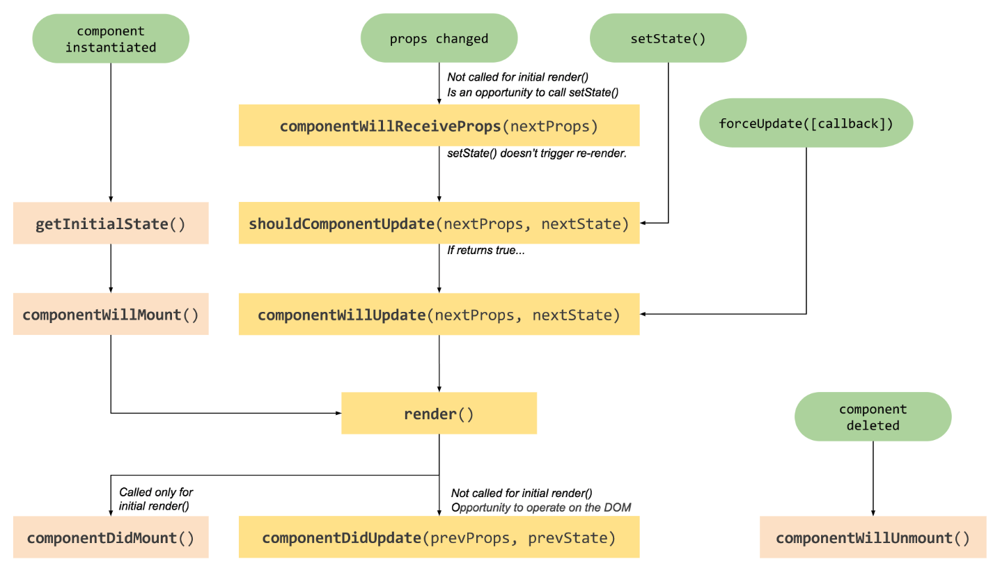
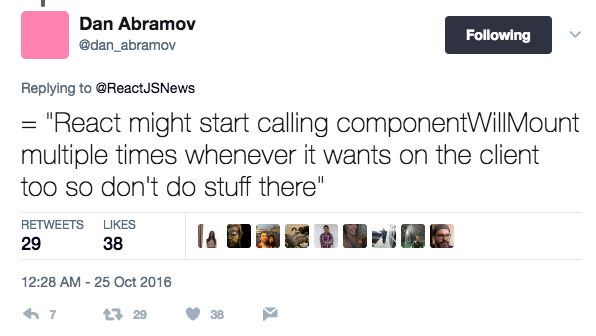
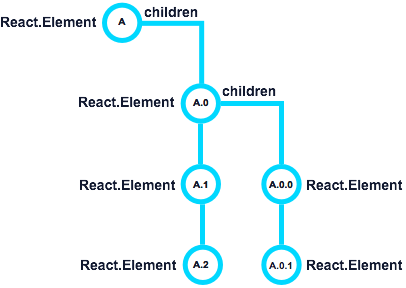
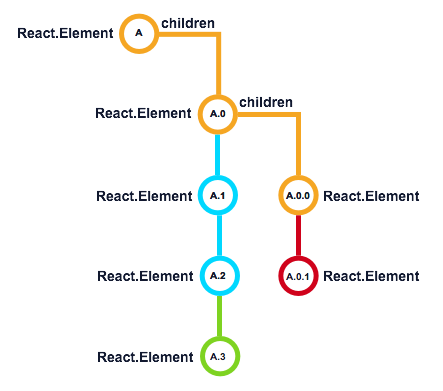
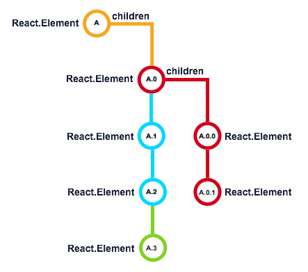

class: cover .cover-content[ # React LifeCycle in Depth ] --- # Why LifeCycle? .quote[ In general we resist adding features that can be implemented in userland. We don't want to bloat your apps with useless library code. However, there are exceptions to this. For example, if React didn't provide support for local state or lifecycle hooks, people would create custom abstractions for them. When there are multiple abstractions competing, React can't enforce or take advantage of the properties of either of them. It has to work with the [lowest common denominator](). This is why sometimes we add features to React itself. ] .quote-source[ Common Abstraction - Design Principles - React ] --- # LifeCycle Phases .trigger-time.trigger-time--2em[ - Mounting (Birth) - Updating (Growth) - Unmounting (Death) ] --- # LifeCycle Methods Overview <div>  </div> --- # Mounting ### The very beginning: `ReactDOM.render` -- .code-block.code-block--smaller[ ```jsx import React from 'react'; import ReactDOM from 'react-dom'; class MyComponent extends React.Component { render() { return <div>Hello World!</div>; } }; ReactDOM.render(<MyComponent />, document.getElementById('mount-point')); ``` ] --- # Mounting - `constructor` .trigger-time.trigger-time--2em[ 1. compute `props` 2. execute `constructor` - define initial `state` - other custom logics ] .demo-link[ [Demo](https://codesandbox.io/s/YvWl4Z00A) ] --- ## Good Practices .trigger-time.trigger-time--2em[ - pass `props` to `super` - initialize instance variables (timer, event handler, cache, etc) ] -- ## Bad Practices .trigger-time.trigger-time--2em[ - compute instance variable by `props`, [example](https://github.com/adRise/www/blob/master/src/common/components/OTTPlayer/AdMessage.js#L31) - initialize `state` by the same name `prop`, [example](https://github.com/adRise/www/blob/master/src/common/containers/UserSettings/Parental/Parental.js#L26) - `bind` `this`, recommend lambda, [example](https://github.com/adRise/www/blob/master/src/common/components/FeaturedCarousel/FeaturedCarousel.js#L36) - declare class level constant, [example](https://github.com/adRise/www/blob/master/src/common/components/OTTAppModal/OTTAppModal.js#L14) ] --- ## Mounting - `componentWillMount` <br /> ### prepare for the first render .trigger-time.trigger-time--2em[ - only called one time, which is before the initial render - can safely call `this.setState` - the only lifecycle hook called on server rendering, generates the exact same markup ] --- ### Avoid introducing side-effects or subscriptions <br /> <div>  </div> .demo-link[ [example](https://github.com/adRise/www/blob/master/src/common/components/OTTScreensaver/OTTScreensaver.js#L22) ] --- ## Good practices <br /> .quote[ Generally, we recommend using the `constructor()` instead. ] .quote-source[ [React.Component](https://facebook.github.io/react/docs/react-component.html#componentwillmount) - React ] --- ## Mounting - `render` <br /> ### the most familiar method .trigger-time.trigger-time--2em[ - required method - create React Elements (generally via JSX) and return a single React Element - should be pure, only determined by `props` and `state` - the only method that exists across multiple life cycle phases (mounting & updating) ] --- ### DO NOT execute `this.setState` .code-block.code-block--smaller[ ```jsx render() { // BAD: Do not do this! this.setState({ foo: 'bar' }); return ( <div className={classNames('person', this.state.mode)}> { this.props.name } (age: { this.props.age }) </div> ); } ``` ] --- ### DO NOT access DOM .demo-link[ [example](https://github.com/adRise/www/pull/1190/files#diff-194074b90d107dc5525a3a3ae428f0e0) ] --- ## Mounting - `componentDidMount` ? <br /> ## Not really --- ## Mounting - Children <br /> <div style="width: 20em; padding: 2em; margin: 0 auto; background: white;">  </div> .demo-link[ [Demo](https://codesandbox.io/s/OVPDlv8R) ] --- ## What's the order? <br /> ### Depth First Traversal, actually, it's a recursive function call. --- ## Mounting - `componentDidMount` .trigger-time.trigger-time--2em[ - only called one time, when all its children Elements and Component instances are mounted - safe to access and manipulate DOM - `this.refs` is available - `this.setState` triggers a re-rendering ] .demo-link[ [Demo](https://codesandbox.io/s/OVPDlv8R) ] --- ## What's the order, again? <br /> <div style="width: 20em; padding: 2em; margin: 0 auto; background: white;"> </div> .demo-link[ Order Matters, [Case Study](https://github.com/adRise/www/pull/1190) ] --- ## Good Practices .trigger-time.trigger-time--2em[ - execute DOM initialization - setup 3rd party UI - fetch data - add event listners - update `state` according DOM or data, [example](https://github.com/adRise/www/blob/master/src/common/components/Carousel/Carousel.js#L49) ] --- # Updating <div> </div> --- ## Updating - `componentWillReceiveProps` .trigger-time.trigger-time--2em[ - invoked before a mounted component receives new props - React may call this method even if the `props` have not changed, [(A => B) !=> (B => A)](https://facebook.github.io/react/blog/2016/01/08/A-implies-B-does-not-imply-B-implies-A.html) - could compare current `props` and `nextProps` to change `state` or do other things - safe to `this.setState` ] .demo-link[ [Demo](https://codesandbox.io/s/kRplQDGLr) , [Case Study](https://github.com/adRise/adrise_cmsui/pull/176/commits/57a0c68b8302b03e65269bab0c7ebc18d1da032a) ] --- ## Good Practices .trigger-time.trigger-time--2em[ - attach/detach event listeners when prop changes, [example](https://github.com/adRise/www/blob/master/src/common/components/TransportControls/TransportControls.js#L51) - change `state` triggered by different `nextProps`, [example](https://github.com/adRise/www/blob/master/src/common/components/Carousel/Carousel.js#L57) ] -- ## Bad Practices .trigger-time.trigger-time--2em[ - dispatch action, may cause infinite loop, [issue](https://github.com/reactjs/react-router-redux/issues/212) - do expensive things without condition, [example](https://github.com/adRise/www/blob/master/src/common/containers/FireVideo/FireVideo.js#L79) - do things which have side effects, this method could be invoked multiple times in React Fiber ] --- ## Updating - `shouldComponentUpdate` <br /> ### prevent unnecessary renders .trigger-time.trigger-time--2em[ - default behavior is to re-render on every state change - returning false means the updating phase is skipped - `this.forceUpdate` could skip this method ] --- ## Good Practices .trigger-time.trigger-time--2em[ - use `PureComponent` as much as possible, it implements `shouldComponentUpdate` with a shallow comparison - return false as early as possible - avoid expensive third party DOM Element re-rendering, [example](https://github.com/adRise/www/blob/master/src/common/components/VideoPlayer/VideoPlayer.js#L67) ] -- ## Bad Practices .trigger-time.trigger-time--2em[ - change instance variables - do things which have side effects, this method could be invoked multiple times in React Fiber ] --- ## Updating - `componentWillUpdate` .trigger-time.trigger-time--2em[ - similar to `componentWillMount`, but invoked many times - could compare current `props` with `nextProps`, `state` with `nextState` to do some things - CAN NOT call `this.setState` ] --- ## Good Practices .trigger-time.trigger-time--2em[ - handle expensive update for re-rendering, [example](https://github.com/adRise/www/blob/master/src/common/containers/Video/Video.js#L77) - trigger callback ] -- .code-block.code-block--smaller[ ```jsx // dispatching an action based on state change componentWillUpdate(nextProps, nextState) { if (nextState.open == true && this.state.open == false) { this.props.onWillOpen(); } } ``` ] -- ## Bad Practices .trigger-time.trigger-time--2em[ - do things which have side effects, this method could be invoked multiple times in React Fiber ] --- ## Updating - re-rendering & children updates <div style="width: 20em; padding: 2em; margin: 0 auto; background: white;">  </div> React compares the current Element tree structure returned from the `render` method --- ## Updating - `componentDidUpdate` .trigger-time.trigger-time--2em[ - similar to `componentDidMount`, but invoked many times - called after all of the children and itself are updated ] .demo-link[ [Demo](https://codesandbox.io/s/An9VEB4zO) ] --- ## Good Practices .trigger-time.trigger-time--2em[ - manage 3rd party UI elements - interact with the updated UI, [example](https://github.com/adRise/www/blob/master/src/common/components/AutoPlay/AutoPlayPrompt.js#L78) - do network requests as long as you compare the current props to previous props ] -- ## Bad Practices .trigger-time.trigger-time--2em[ - avoid `this.setState`, do it carefully if you do need it ] .code-block.code-block--smaller[ ```jsx componentDidUpdate(prevProps, prevState) { // BAD: DO NOT DO THIS!!! let height = ReactDOM.findDOMNode(this).offsetHeight; this.setState({ internalHeight: height }); } ``` ] --- ## Unmounting - `componentWillUnmount` .trigger-time.trigger-time--2em[ - invoked immediately before a component is unmounted and destroyed. - perform any necessary cleanup, mainly revert `componentDidMount` ] --- ## Good Practices .trigger-time.trigger-time--2em[ - remove event listener - cancel network request - clear timer - destroy 3rd party UI library elements ] --- ## Question: What's the order? <div style="width: 20em; padding: 2em; margin: 0 auto; background: white;">  </div> --- # References .trigger-time.trigger-time--2em[ - [The React Life Cycle](https://developmentarc.gitbooks.io/react-indepth/content/life_cycle/introduction.html) - [React.Component](https://facebook.github.io/react/docs/react-component.html) - [Where to Fetch Data: componentWillMount vs componentDidMount](https://daveceddia.com/where-fetch-data-componentwillmount-vs-componentdidmount/) - [React Fiber, a thread optimizer](https://medium.com/@weswhite/react-fiber-a-thread-optimizer-a312f6d4599e) - [ReactCompositeComponent.js](https://github.com/facebook/react/blob/v15.5.4/src/renderers/shared/stack/reconciler/ReactCompositeComponent.js) ] --- name: last-page # Thanks